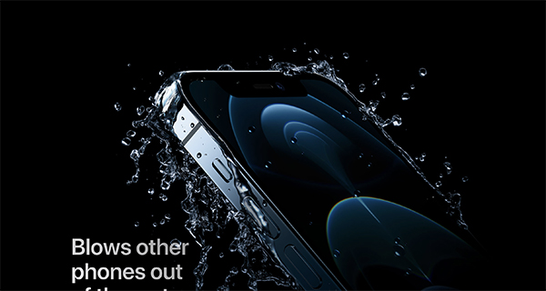

Project Summary
My webpage will serve as an illustration portfolio for my artworks from over the past 5 years. I want the
content
of this page to feel just as dynamic as the parallaxed hero image illustration. I will remove the slideshow
javascript from my studio 2 and replace it with a scroll listener for each image.
Comparison Project 1

iPhone 12 Pro from Apple's website. Image links to site.
Apple's webpage for their iPhone 12 Pro displays their product in a super visually appealing fashion.
From top to bottom, the webpage displays the content according to the user's scroll position in the
window. The interface is very dynamic in the way it displays images. The dark background accentuates the
iPhone's metallic features. The only downside to having these incredibly high-resolution images is the
load times. The high-quality images come at a cost as seen in the network tab in google chrome's
inspector tool. After a hard reload, the webpage takes a total of 5.66s for my wifi. For user standards,
that's a few seconds too long. I'm unsure if this can be helped because the whole purpose of the webpage
is to see the detail of the iPhone 12. There's no way to do that unless the resolution was incredibly
high.
Comparison Project 2
Landing page for Chandon Garden Spritz. Image links to site.
Similarly, Chandon Garden also has poor load times. Using the google chromes inspector tool, the network
tab shows me the page takes 6.61 seconds to load under my wifi. Unfortunately, most users are far too
impatient to wait that long for a webpage to load. However, I think the beauty of the webpage makes up
for the load times. The seamless animation with the Chandon Sprite bottle is addicting to watch. As the
user scrolls down the webpage, the bottle spins and moves down with the user. What I find particularly
interesting is the way the scroll position bounces into a locked position when the user scrolls near
enough to a page element. This feature is great for the user since it shows them that there is something
important or interesting in the current scroll window.
Project Goals
I want the webpage to be dynamic from top to bottom just as Apple did with their page for the iPhone 12
Pro. I may want to include a scroll lock similar to Chandon Garden's website, however, I'm unsure if
that will hinder the gallery experience. Also, since this is a webpage primarily meant for displaying
images I may have to sacrifice some load time for some better quality images. It seems nice websites
such as Apple's and Chandon's websites also sacrificed load times for exceptional image resolutions. My
webpage should be more similar to Apple than to Chandon since there is very little typography used in
their display. I need to present the illustrations in a way that lets them speak for themselves.
Design Strategies
I want the theme for my webpage to echo a similar artistic style to my artworks. This will unify the
webpage display with the content that I want to share. I might want to go with a medium to dark
intensity background so that my illustrations pop off the page. For the darker illustrations, I will
include a very small border so that the edges are clear. Although there is not much text on the page, I
still think there should be something other than a bland serif or san-serif typeface. Since the genre of
my illustrations is generally pretty fictional, I've chosen an atypical serif font to pull together the
theme.
Interaction Strategies
The interactions will be minimal since this will be a gallery webpage. I want the user's scroll to take
care of all the dynamic interactions so that they don't have to do too much clicking. Hopefully, this
webpage will be more cinematic than interactive. The only link I have is a link to an ID just below the
button. During my refinement, I may get rid of this so that the user will understand that they have to
scroll to see all the content. Not only that, the button makes the parallax animation too quick which
meant that they didn't get to savor the visuals. Audio feedback won't be as critical in this webpage
since I want the user to focus on the visuals instead.
Experience Goals
The user experience for this webpage should be relaxing. I want the user to sit back and enjoy the
content. I don't want to make the user touch anything other than their scroll wheel because I feel as
though that's the easiest way to navigate a webpage. I think once the user scrolls past the first
parallax animation I think they will understand that the theme of the page is very dynamic and only
requires scrolling. I think sometimes pages are too interactive and possibly ask too much of the user,
so I sort of want this to be the opposite here.